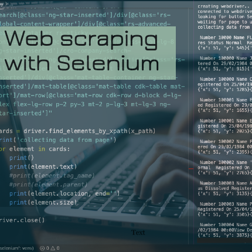
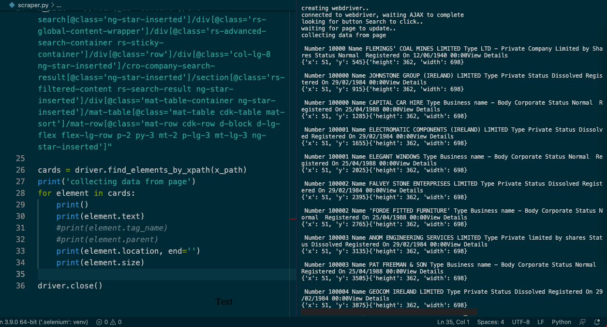
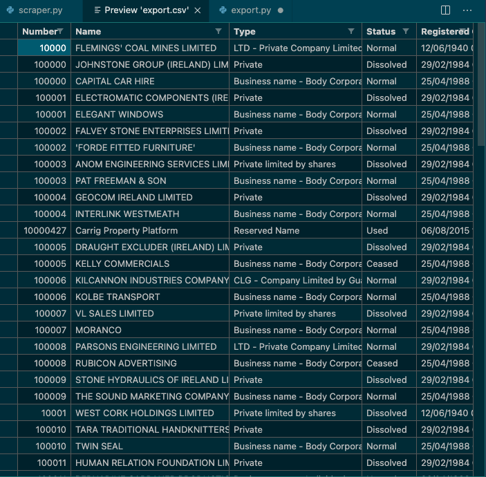

Webdriver for scraping
Many modern sites are loaded with javascripts that add information to existing web page based on user actions. This type of sites sometimes dificult (if possible) to scrape using standard requests+beautifulsoup methods. This where python's selenium library can be used.
Objective of the scipt(s) was to scrape data from web site that contains registration data for public companies. Site has search page the load content after user enter search criteria(s). Initatials sraping with requests library returned empty page. Manual navigation over search results showed thousand of companies listed 10 per page.
Two script were used to collect and save data to CSV file. Python's library selenium used to utilize chromedriver for navigating through web pages.

Python's library selenium used to utilize chromedriver for navigating through web pages.
While method .find_element_by_xpath() find required tags on updaded page, another method .click() used to move to next page.
# import libraries
import time
from selenium import webdriver
from selenium.webdriver.common.keys import Keys
print('creating webdriver..')
driver = webdriver.Chrome(executable_path='driver/chromedriver')
# create driver, navigate to page and get data
#driver = webdriver.Safari()
driver.get('https://core.cro.ie/search')
print('connected to webdriver, waiting AJAX to complete')
# wait for AJAX to complete
time.sleep(15)
#assert "Python" in driver.title
# locate button 'search'
x_path = "//main[@id='content']/cro-search[@class='ng-star-inserted']/div[@class='rs-global-content-wrapper']/div[@class='rs-advanced-search-container rs-sticky-container']/div[@class='row']/div[@class='col-lg-4']/aside[@class='rs-form-wrapper']/cro-company-search-form[@class='ng-star-inserted']/form[@class='ng-untouched ng-pristine ng-valid']/section[@class='d-flex flex-row rs-container rs-content rs-container-border justify-content-between']/regsys-reactive-button[2]/button[@class='rs-button btn btn-outline-primary']"
print('looking for button Search to click..')
driver.find_element_by_xpath(x_path).click()
print('waiting for page to update..')
time.sleep(10)
# get location of tables
x_path_table = "//main[@id='content']/cro-search[@class='ng-star-inserted']/div[@class='rs-global-content-wrapper']/div[@class='rs-advanced-search-container rs-sticky-container']/div[@class='row']/div[@class='col-lg-8 ng-star-inserted']/cro-company-search-result[@class='ng-star-inserted']/section[@class='rs-filtered-content rs-search-result ng-star-inserted']/div[@class='mat-table-container ng-star-inserted']/mat-table[@class='mat-table cdk-table mat-sort']/mat-row[@class='mat-row cdk-row d-block d-lg-flex flex-lg-row p-2 py-3 mt-2 p-lg-3 mt-lg-3 ng-star-inserted']"
x_path_next = "//button[@type='button' and @aria-label='Next Page']"
x_path_details = "/html/body[@class='undefined']/regsys-root/div[@class='rs-root']/div[@class='rs-content-wrapper']/div[@class='rs-main-wrapper collapsed']/main[@id='content']/cro-search[@class='ng-star-inserted']/div[@class='rs-global-content-wrapper']/div[@class='rs-advanced-search-container rs-sticky-container']/div[@class='row']/div[@class='col-lg-8 ng-star-inserted']/cro-company-search-result[@class='ng-star-inserted']/section[@class='rs-filtered-content rs-search-result ng-star-inserted']/div[@class='mat-table-container ng-star-inserted']/mat-table[@class='mat-table cdk-table mat-sort']/mat-row[@class='mat-row cdk-row d-block d-lg-flex flex-lg-row p-2 py-3 mt-2 p-lg-3 mt-lg-3 ng-star-inserted'][1]/mat-cell[@class='mat-cell cdk-cell buttons-cell d-block d-inline-block flex-lg-row flex-lg-grow-0 flex-lg-shrink-0 cdk-column-redirectCol mat-column-redirectCol ng-star-inserted']/regsys-reactive-button/button[@class='rs-button btn btn-outline-primary']"
file = open('companies.csv', 'a')
for page_num in range(10):
cards = driver.find_elements_by_xpath(x_path_table)
print('collecting data from page')
for element in cards:
print()
print(element.text)
file.writelines(element.text + '\n')
#time.sleep(5)
#driver.find_element_by_xpath(x_path_details).click()
time.sleep(5)
print('looking for next page to click..')
driver.find_element_by_xpath(x_path_next).click()
print('waiting for page to update..')
time.sleep(5)
file.close()
driver.close()After saving scraped data to CSV file, another scipt is used to format data to table.
Python's library Pandas used for data manipulation

# import libraries
import pandas as pd
columns = ['Number' , 'Name', 'Type', 'Status', 'Registered On']
companies = []
company = {}
with open('companies.csv') as csv_file:
for line in csv_file.readlines():
if line.strip('\n') in columns:
#print('found!')
column = line.strip('\n')
continue
if line.strip('\n') == 'View Details':
companies.append(company)
company = {}
continue
company[column] = line.strip('\n')
print(f'{column}: {company[column]}')
#print(line.strip('\n'))
df = pd.DataFrame(companies).set_index('Number')
print(df.head())
df.to_csv('export.csv')Thank you for viewing my project. Any comment, suggestion, please adress to me by email bellow.